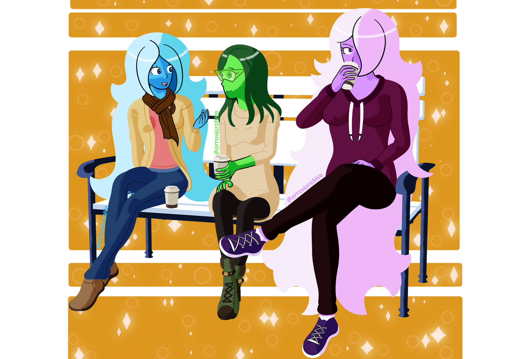

Fall 2021
Aqua: "Coffee is better with friends, isn't it?!"
Shadow: "Coffee's better when they get my order right."
It's finally Fall! The time of year where sweaters, leggings, and boots are fashionable, where leaves change color before falling to the ground, and where pumpkin spice is in-season. I wondered how Aqua would spend time with her friends during the fall and how much they'd enjoy the situation.
I had three goals for this picture: making everyone's body language clear, designing new outfits for everyone, and researching what kind of coffee they would enjoy most. When I posted a work-in-progress of this image, their expressions were easily understood and helped set the tone (which I was worried about, since Shadow's left eye is usually covered), and I felt more confident because of it.
The next goal of mine was the fashion. I wanted to go for a "formal, casual, and comfortable" look across the board and colors that suited them and the season. Shadow's outfit was the easiest for me to design, with Chlora's being the hardest and Aqua's falling somewhere in the middle. Shadow's outfit is based on fall attire I have worn and seen other people wear; Aqua's is partially based on what I like wearing (warm leggings, boots, and a cardigan/nested jacket) with a scarf around her neck because she looked good with one last time, and Chlora's is based on sweater dresses with tights that I found photos of online. I was unfamiliar with that type of outfit, so it took the most time for me to draw. I was thinking about giving them hats, but that idea didn't stick.
My last goal was to find the kinds of coffee everyone would enjoy most. After researching coffee personality charts, Aqua's favorites are a Latte and Mocha, Chlora enjoys a Double Espresso or Macchiato, and Shadow enjoys a Cappucino. They're all shown in to-go cups because I didn't want this piece taking place in a coffee shop. I wanted them to be on the street and enjoying each other's company.
There are some things I could have spent more time on, such as the shading on Aqua's hand and scarf or giving the orange background a little more flair. I'm just happy that I finished this piece, and I hope that you all enjoy the change of seasons as much as I do.